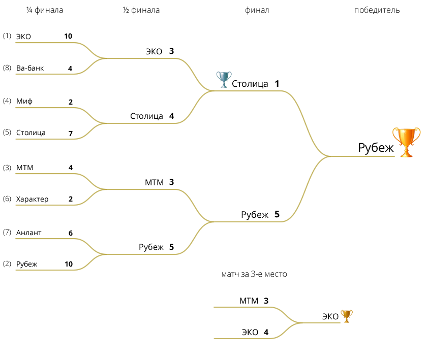

| № | Команда | И | В | H | П | Ш | О |
|---|---|---|---|---|---|---|---|
| 1 | ЭКО | 18 | 15 | 1 | 2 | 101:52 | 46 |
| 2 | РУБЕЖ | 18 | 15 | 0 | 3 | 116:51 | 45 |
| 3 | МТМ | 18 | 13 | 1 | 4 | 95:51 | 40 |
| 4 | МИФ | 18 | 12 | 1 | 5 | 80:59 | 37 |
| 5 | СТОЛИЦА | 18 | 11 | 0 | 7 | 72:46 | 33 |
| 6 | ХАРАКТЕР | 18 | 7 | 2 | 9 | 62:69 | 23 |
| 7 | АТЛАНТ | 18 | 6 | 1 | 11 | 64:71 | 19 |
| 8 | ВА-БАНК | 18 | 2 | 2 | 14 | 48:89 | 8 |
| 9 | МИКСТ | 18 | 2 | 2 | 14 | 46:110 | 8 |
| 10 | МИНСКИЕ МОЛНИИ | 18 | 2 | 0 | 16 | 33:120 | 6 |
Примечание:
И — игры,
В — выигрыши,
H — ничьи,
П — поражения,
Ш — шайбы (забито / пропущено),
О — очки.

Лучший вратарь — Андрей Фролов (МТМ)
Лучший защитник — Николай Владыкин (Столица)
Лучший нападающий — Игорь Бутько (Строитель)
Лучший бомбардир — Павел Белый (Рубеж)
| Имя | Фамилия | Команда | Шайбы | Передачи | Очки | |
|---|---|---|---|---|---|---|
| 1. | Павел | Белый | Рубеж | 65 | 41 | 106 |
| 2. | Игорь | Бутько | ЭКО | 22 | 20 | 42 |
| 3. | Юрий | Кореневский | Характер | 20 | 17 | 37 |
| 4. | Дмитрий | Дубень | ЭКО | 17 | 20 | 37 |
| 5. | Александр | Рымша | МТМ | 16 | 20 | 36 |
| 6. | Виталий | Шаков | МТМ | 18 | 16 | 34 |
| 7. | Руслан | Тужиков | Характер | 13 | 19 | 32 |
| 8. | Вадим | Бекбулатов | Рубеж | 8 | 23 | 31 |
| 9. | Максим | Лушков | МТМ | 14 | 16 | 30 |
| 10. | Владимир | Меленчук | Рубеж | 10 | 19 | 29 |